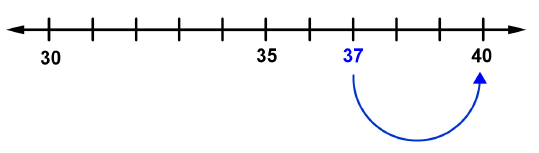
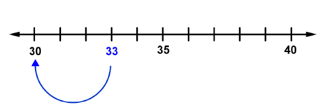

Chapter 1: Numbers
Section 1.3: Rounding Whole Numbers
Learning Objective(s)
- Learn the rules for rounding.
- Round whole numbers to specific place values, including tens, hundreds, and thousands.
Introduction
In some situations, you don't need an exact answer. In these cases, rounding the number to a specific place value is helpful. For example, if you travelled 973 miles, you might want to round the distance to 1,000 miles, which is easier to think about. Rounding also comes in handy to check whether a calculation is reasonable.
Rounding Whole Numbers
Rules for Rounding Whole Numbers
- Identify the digit in the place value you are rounding to.
- Look at the digit immediately to the right of that place.
- If that digit is less than 5, round down — keep the identified digit the same and replace all digits to its right with zeros.
- If that digit is 5 or greater, round up — increase the identified digit by 1 and replace all digits to its right with zeros.
- When a number is exactly halfway between two possible rounded values, round up to the greater number.
You can use a number line to help visualize rounding. The number that is closer to your original number is the one you round to.
Example 1
A camera is dropped out of a boat and sinks to the bottom of a pond that is 37 feet deep. Round 37 to the nearest ten.
Solution
The digit we are rounding to is the tens digit, 3. The number 37 falls between 30 and 40 on the number line.

Since the ones digit (7) is 5 or greater, we round up.
Answer: 37 rounded to the nearest ten is 40.
Example 2
Round 33 to the nearest ten.
Solution
The number 33 falls between 30 and 40.

Since the ones digit (3) is less than 5, we round down.
Answer: 33 rounded to the nearest ten is 30.
You can also determine where to round without a number line by simply looking at the digit to the right of the place you are rounding to. If that digit is less than 5, round down; if it is 5 or greater, round up.
Example 3
Round 77 to the nearest ten.
Solution
The ones digit is 7, which is 5 or greater, so round up.
Answer: 77 rounded to the nearest ten is 80.
Example 4
There are 576 jellybeans in a jar. Round this number to the nearest ten.
Solution
The tens digit is 7. The ones digit is 6, which is 5 or greater, so round up.
Answer: 576 rounded to the nearest ten is 580.
When rounding to the nearest hundred, the rounded number will have zeros in both the tens and ones places.
Example 5
A runner ran 1,539 meters but describes the distance with a rounded number. Round 1,539 to the nearest hundred.
Solution
The hundreds digit is 5. The digit to its right (tens digit) is 3, which is less than 5, so round down.
Answer: 1,539 rounded to the nearest hundred is 1,500.
When rounding to the nearest thousand, the rounded number will have zeros in the hundreds, tens, and ones places.
Example 6
A plane's altitude increased by 2,721 feet. Round this number to the nearest thousand.
Solution
The thousands digit is 2. The digit to its right (hundreds digit) is 7, which is 5 or greater, so round up.
Answer: 2,721 rounded to the nearest thousand is 3,000.
Example 7
Round 326,749 to the nearest ten thousand.
Solution
The ten-thousands digit is 2. The digit to its right (thousands digit) is 6, which is 5 or greater, so round up.
Answer: 326,749 rounded to the nearest ten thousand is 330,000.
Self Check A
A record number of 23,386 people voted in a city election. Round this number to the nearest hundred.
The two possible values are 23,300 and 23,400. The tens digit is 8, which is 5 or greater, so round up.
23,400
Summary
In situations when you don't need an exact answer, you can round numbers. When you round, you are always rounding to a particular place value, such as the nearest thousand or the nearest ten. Whether you round up or down depends on which possible value is closest to the original number. When a number is exactly halfway between the two possible values, round up to the larger number.
Exercises
Exercises to be added at a later date.